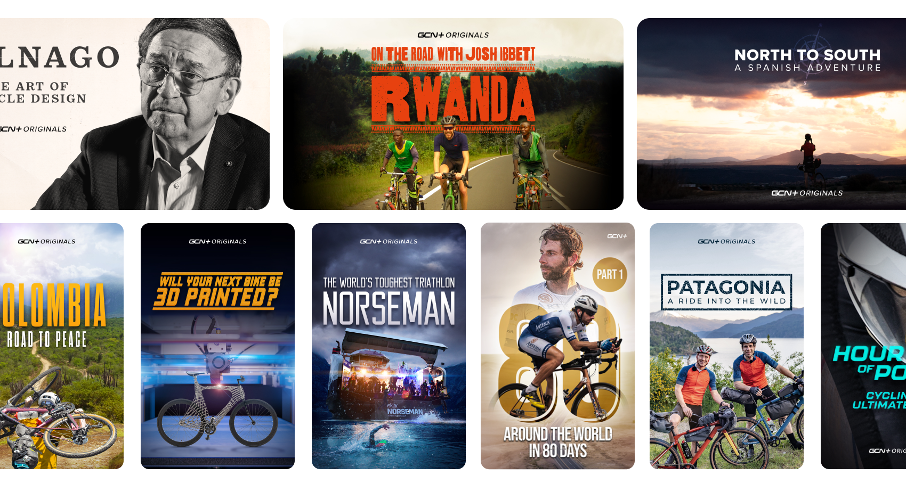
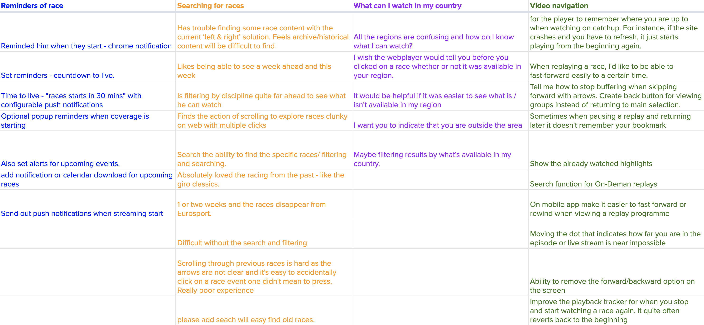
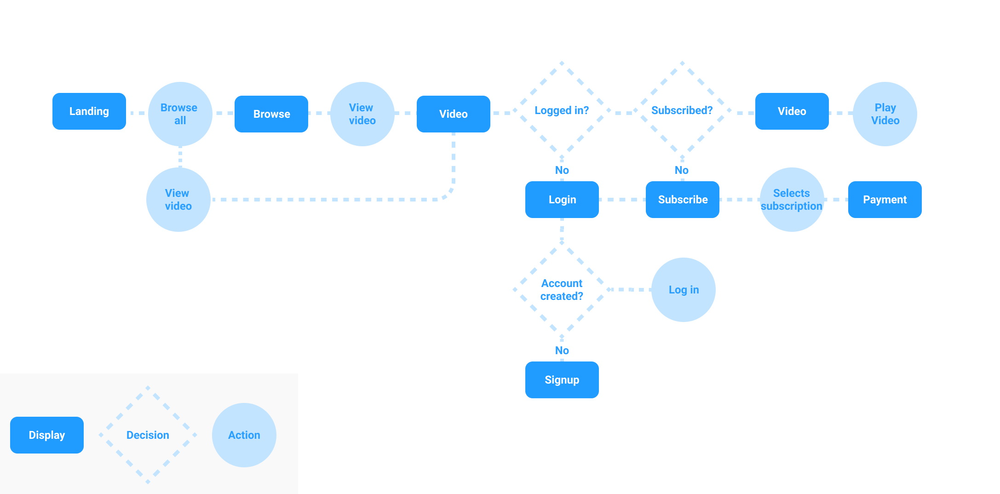
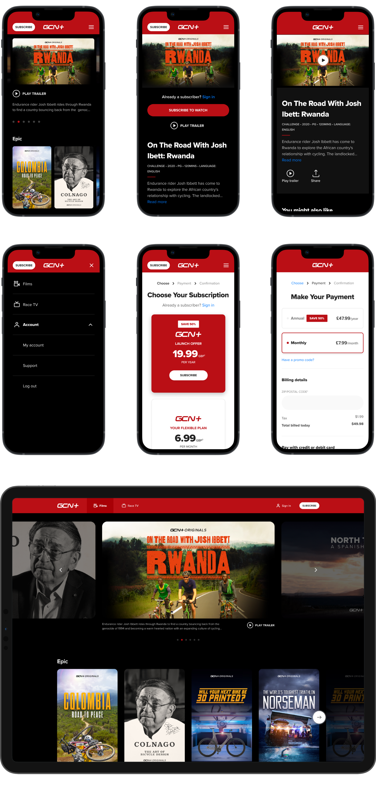

Launching GCN+
ContextGCN+ is Global Cycling Network’s live racing, on-demand films & documentary streaming service. This subscription service is available to purchase worldwide & view on web, mobile, tablet & smart TV. Prior to GCN+, the subscription only featured cycling racing and was branded Race Pass.
 Problem spaceDespite the huge range of cycling races included in the Race Pass subscription, analysing app store reviews, survey data & user interviews with existing subscribers, the main theme of feedback was that it was difficult to understand which races were available to them in their country. When it came to the task of combining our racing and film content into the new GCN+ subscription, the challenge was how we fully educate users on our proposition so that they feel informed enough to subscribe?
ResearchWe hosted Hotjar surveys on the existing Race Pass website, gaining feedback from users on the current state of the product and also recruiting test participants for unmoderated user testing of prototypes. I performed thematic analysis on this user feedback to gain a better understanding of the main pain points. I also began exploring how other streaming subscription services showcased the breadth of content they had on offer.
"It would be helpful if it was easier to see what is / isn't available for me to watch"
The result of my intital research was that potential subscribers wanted to be clear on what films & races they could watch with their subscription package. Other streaming platforms such as Amazon Prime Video allowed users to explore content before being asked to subscribe.
Early design processAfter working with stakeholders & product managers to define the problem space and requirements, I produced high level wireframes and user flows to share with engineering and product teams to get feedback on initial thinking.
 Testing prototypesBy sharing these prototypes with existing subscribers early on in the design process, we were able to gain feedback whether users felt informed enough to subscribe and identify any areas of friction in our subscribe & payment flows.
Testing our prototype with users allowed us to validate our direction for the product. Users found exploration and subscription tasks easy but felt better categorisation of content and the ability to add titles to a personalised list would be beneficial.
Impact & takeawaysWe launched GCN+ successfully across web, mobile & TV, surpassing subscriber targets by 50%. By continuously talking to users throughout the launch phase, we were able to further refine and prioritise further updates to the product.
I'm also growing the GCN app and haveoptimised samsung.com